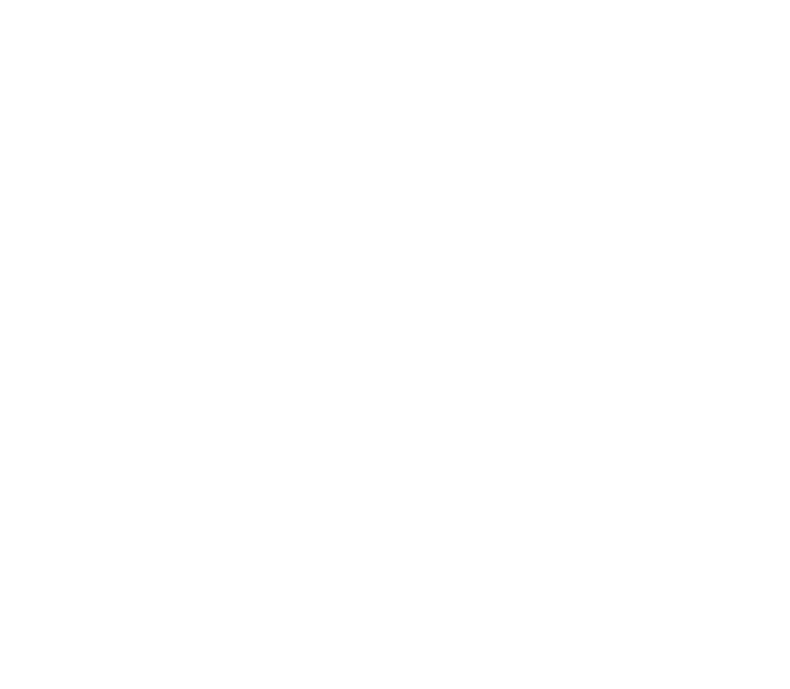
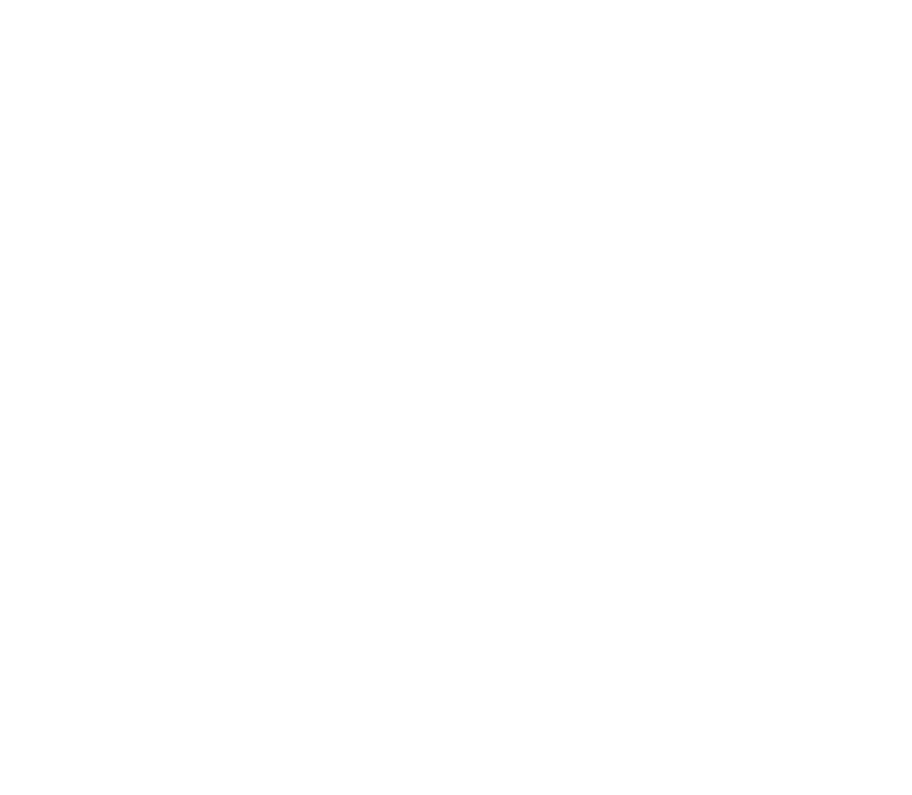
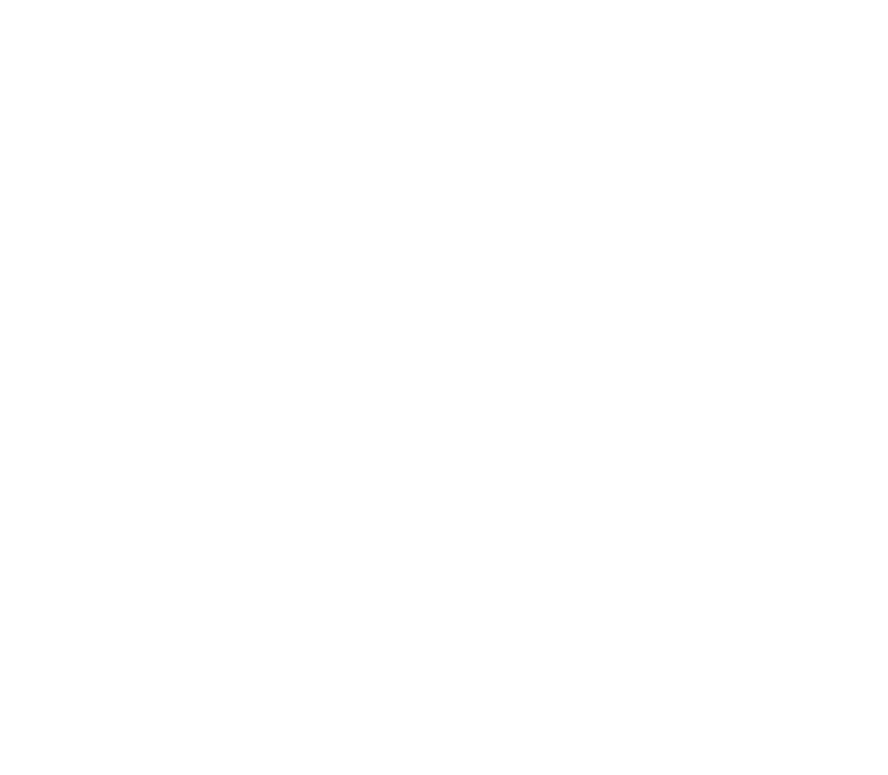
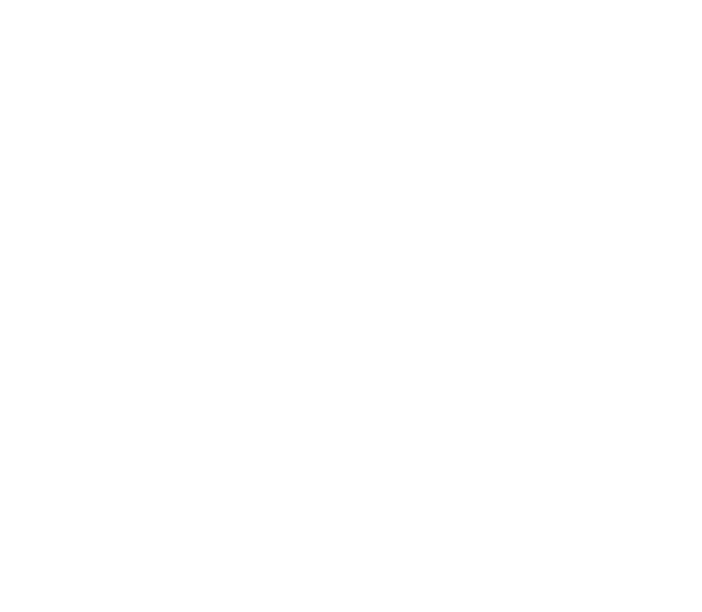
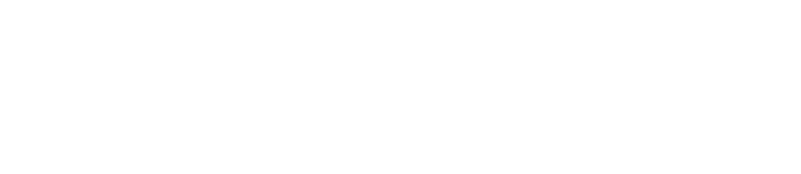

이웃집사장 채널 성과 대시보드
오늘의 변화
채널별 누적 조회수 추세 (첫 스냅샷=100)
표로 보기
| 채널 | 2026-09-14 | 2026-09-17 |
|---|---|---|
| 이웃집사장 | 100.0 | 100.6 |
| 돈터치 | 100.0 | 103.9 |
| 배움에 끝은없다 | 100.0 | 102.8 |
| 꿈꾸는사람들 | 100.0 | 108.2 |
| 배움의 현장 | 100.0 | 129.3 |
| 배워야산다 | 100.0 | 100.9 |
| 돈벌고 | 0.0 | 11400000.0 |
| 부업 스토리 | 0.0 | 16000000.0 |
| 부업돈 | 0.0 | 17320000.0 |
신규 영상 (2026-09-14 → 2026-09-17)
이웃집사장 최근 업로드 15편
| 업로드 | 제목 | 길이 | 제목자수 | 조회수 | 일평균 | 좋아요율 |
|---|---|---|---|---|---|---|
| 2026-09-16 | 5초만에 그린 낙서로 1억 4천 연금 버는 여자 | 31m | 26 | 9,514 | 9,514 | 0.46% |
| 2026-09-13 | 방구석에서 AI랑 대화하고 42억 번 아이 둘 엄마 | 35m | 28 | 3,773 | 943 | 1.01% |
| 2026-09-10 | AI랑 5분만 대화 나누고 월 2천 버는 아빠 | 34m | 25 | 7,369 | 1,052 | 0.64% |
| 2026-09-06 | 핸드폰으로 2분만에 올린 사진으로 월 2천 버는 청년 | 21m | 29 | 28,994 | 2,635 | 1.42% |
| 2026-09-02 | 방구석에서 김치 팔아서 40억 번 27살 | 17m | 22 | 23,234 | 1,548 | 0.67% |
| 2026-08-23 | 시골에서 노트북 하나로 월 5천 버는 27살 | 24m | 24 | 8,282 | 331 | 1.88% |
| 2026-08-16 | 밖에서 만화책 보면서 매주 2천만원 버는 27살 | 20m | 26 | 92,301 | 2,884 | 0.59% |
| 2026-08-14 | "이거 듣고도 안하고 바보에요" 1년만에 3억 5천 번 숏폼 대행 부업의 모든 것 [30분 풀버전 전부 공개합니다] | 37m | 64 | 40,777 | 1,199 | 2.15% |
| 2026-08-11 | 장보면서 찍은 사진으로 집에서 월 2천 버는 주부 | 28m | 27 | 70,794 | 1,913 | 1.68% |
| 2026-08-10 | 진짜 쉬운데 알려줘도 절대 안하는 월 3억 부업 | 19m | 26 | 32,015 | 842 | 0.57% |
| 2026-08-07 | 26살에 집에서 부업으로만 17억을 번 청년 | 26m | 24 | 156,627 | 3,820 | 2.50% |
| 2026-08-05 | AI랑 누워서 대화하고 천만원 버는 30대 [2026년 부업 추천] | 17m | 37 | 3,347 | 77 | 1.43% |
| 2026-08-03 | 고무장갑 하나로 집에서 9억 8천을 번 엄마 | 24m | 24 | 93,348 | 2,074 | 1.26% |
| 2026-07-29 | "부업 중 가장 확실하게 수익이 났어요" 부업 다 실패하고, 블루오션에서 58억 버는 20대 임산부 | 24m | 55 | 3,075 | 61 | 1.59% |
| 2026-07-27 | "우리나라에서 저만 알아요" AI와 낙서를 합쳐서 30억 번 방법 | 26m | 36 | 3,662 | 70 | 3.11% |
채널 비교
영상당 조회수 중앙값
표로 보기
| 항목 | 값 |
|---|---|
| 이웃집사장 | 6,429 |
| 돈터치 | 128,031 |
| 배움에 끝은없다 | 136,491 |
| 꿈꾸는사람들 | 9,985 |
| 배움의 현장 | 4,597 |
| 배워야산다 | 30,858 |
| 돈벌고 | 29,905 |
| 부업 스토리 | 16,380 |
| 부업돈 | 35,662 |
좋아요율 (좋아요/조회 %)
유료 노출 여부의 간접 지표 — 낮을수록 광고 유입 가능성
표로 보기
| 항목 | 값 |
|---|---|
| 이웃집사장 | 1.99% |
| 돈터치 | 0.00% |
| 배움에 끝은없다 | 0.00% |
| 꿈꾸는사람들 | 2.34% |
| 배움의 현장 | 0.00% |
| 배워야산다 | 2.01% |
| 돈벌고 | 0.00% |
| 부업 스토리 | 1.29% |
| 부업돈 | 0.00% |
구독자 1명당 누적 조회수
비정상적으로 높으면 유료 노출 의심
표로 보기
| 항목 | 값 |
|---|---|
| 이웃집사장 | 15회 |
| 돈터치 | 90회 |
| 배움에 끝은없다 | 135회 |
| 꿈꾸는사람들 | 57회 |
| 배움의 현장 | 289회 |
| 배워야산다 | 54회 |
| 돈벌고 | 12회 |
| 부업 스토리 | 16회 |
| 부업돈 | 82회 |
이웃집사장 추이
이웃집사장 월별 조회수 중앙값 (업로드 월 기준)
표로 보기
| 항목 | 값 |
|---|---|
| 2025-02 | 440,275 |
| 2025-03 | 336,277 |
| 2025-04 | 65,908 |
| 2025-05 | 60,125 |
| 2025-06 | 24,383 |
| 2025-07 | 7,567 |
| 2025-08 | 9,551 |
| 2025-09 | 7,092 |
| 2025-10 | 6,046 |
| 2025-11 | 5,675 |
| 2025-12 | 5,829 |
| 2026-01 | 4,427 |
| 2026-02 | 1,576 |
| 2026-03 | 2,821 |
| 2026-04 | 2,772 |
| 2026-05 | 4,465 |
| 2026-06 | 7,923 |
| 2026-07 | 8,929 |
| 2026-08 | 55,785 |
| 2026-09 | 9,514 |
이웃집사장 역대 상위 10편
| 업로드 | 제목 | 길이 | 제목자수 | 조회수 | 일평균 | 좋아요율 |
|---|---|---|---|---|---|---|
| 2025-02-21 | AI로 7초만에 글쓰고 월 300만원 버는 62세 | 23m | 27 | 839,034 | 1,464 | 2.14% |
| 2025-03-27 | "직원 5명 업무를 AI가 다 해줘요" AI로 연 2억 버는 94년생 | 30m | 38 | 631,753 | 1,172 | 2.19% |
| 2025-06-20 | "쇼츠 부업 사기 아닌가요?" 직접 1달간 키워봤습니다 (수익 전부 공개) | 16m | 41 | 493,303 | 1,086 | 1.85% |
| 2026-05-22 | 마트에서 찍은 사진으로 16억 버는 경희대 4학년 대학생 | 24m | 31 | 177,158 | 1,501 | 1.34% |
| 2026-08-07 | 26살에 집에서 부업으로만 17억을 번 청년 | 26m | 24 | 156,627 | 3,820 | 2.50% |
| 2025-04-06 | 촬영 필요 없는 유튜브로 최소 월 200만원 버는 방법 전부 공개합니다 | 18m | 39 | 148,580 | 280 | 1.98% |
| 2025-05-08 | 16초짜리 쇼츠로 800만원 넘게 버는 26살 | 25m | 25 | 112,827 | 227 | 2.10% |
| 2026-08-03 | 고무장갑 하나로 집에서 9억 8천을 번 엄마 | 24m | 24 | 93,348 | 2,074 | 1.26% |
| 2026-08-16 | 밖에서 만화책 보면서 매주 2천만원 버는 27살 | 20m | 26 | 92,301 | 2,884 | 0.59% |
| 2025-07-29 | AI 영상 "가장 쉽게" 만드는 법, 전부 공개합니다 | 포브스 대상 디자이너 대표가 알려주는 AI 이미지, 영상 활용법 전부 공개! | 21m | 74 | 75,911 | 182 | 2.43% |
썸네일
이웃집사장 상위 12 썸네일

돈터치 상위 12 썸네일
배움에 끝은없다 상위 12 썸네일

꿈꾸는사람들 상위 12 썸네일

배움의 현장 상위 12 썸네일
배워야산다 상위 12 썸네일

돈벌고 상위 12 썸네일

부업 스토리 상위 12 썸네일

부업돈 상위 12 썸네일

분석 보고서
이웃집사장 롱폼 1차 분석 (2026-09-14)
데이터: 공개 메타데이터 117개 롱폼 (2025-02-09 ~ 2026-09-13), yt-dlp 수집. 재현: python3 scripts/build_dataset.py && python3 scripts/analyze_longform.py
핵심 수치
- 총 조회수 4.16M / 중앙값 6,339 / 평균 35,538
- 상위 3개 영상이 전체 조회수의 47%, 상위 10개가 68% — 전형적인 히트 의존 구조
- 시기별 중앙값: 2025-02~03 (AI 붐) 30~44만 → 2025-07~2026-01 5~9천 → 2026-02~04 최저 1.5~2.8천 → 2026-08 5.6만으로 반등
발견 1. 제목 길이가 가장 강한 단일 변수
| 제목 길이 | n | 조회수 중앙값 |
|---|---|---|
| ≤30자 | 20 | 18,651 |
| >30자 | 97 | 5,966 |
최근 120일로 좁혀 일평균 조회수로 비교하면 ≤30자 2,009/일 vs >30자 83/일 (24배). 2026-08 반등기의 평균 제목 길이는 31.5자, 09월은 26.2자 — 침체기(2026-04~05)는 51~58자.
잘 되는 제목 공식
[장소/도구] + [쉬워 보이는 행위] + [구체적 금액] + [평범한 인물]
- 26살에 집에서 부업으로만 17억을 번 청년 (4,122/일)
- 2분만에 올린 사진으로 월 2천 버는 청년 (3,624/일)
- 밖에서 만화책 보면서 매주 2천만원 버는 27살 (3,183/일)
- 고무장갑 하나로 집에서 9억 8천을 번 엄마 (2,223/일)
- 방구석에서 김치 팔아서 40억 번 27살 (1,936/일)
안 되는 제목 패턴 (최근 120일 하위권, 40~90/일)
- 따옴표 인용 훅으로 시작:
"아무도 몰라요","저만 알아요","노가다하다가…" - 추상적 과장어: 블루오션, 신박한, 미친, 역대급, 95%는 모르는
|구분자로 두 문장 이어붙이기,[2026년 부업 추천]류 괄호 꼬리표- 위 요소가 붙으면 길이가 40~60자로 늘어나며 성과가 급락
주의: 숫자·금액·나이 유무는 변별력 없음 — 이미 97%가 숫자, 84%가 금액을 쓰고 있어 차별화 요소가 아님.
발견 2. 주제: AI 피로, "손에 잡히는 물건/사진"이 현재 강세
- 2025 상반기 AI 영상이 채널 최대 히트(84만, 63만)를 만들었지만 최근 120일 AI 주제 3편은 80/일 수준으로 최하위
- 최근 강세: 사진/이미지(2,082/일 중앙값), 실물 상품(고무장갑, 김치, 만화책) — "누구나 가진 것으로" 프레임
- 부동산/주식은 4편 모두 중앙값 1.8천 — 채널 정체성과 안 맞음
발견 3. 길이
| 영상 길이 | n | 중앙값 |
|---|---|---|
| 25~35분 | 22 | 20,120 |
| 15~25분 | 71 | 6,339 |
| ~15분 | 21 | 4,175 |
15분 미만은 일관되게 약함. 다만 최근 히트작은 20~27분대에 몰려 있어, "25분 이상"보다 "20분 미만으로 줄이지 말 것"이 더 정확한 해석.
발견 4. 요일 (참고 수준, n 작음)
목·금 업로드 중앙값 7.6천 > 월·화 5~6천 > 수 4.0천(최저). 토요일은 6편뿐이라 판단 보류.
즉시 적용 가능한 액션
- 제목 30자 이내, 따옴표 훅·
|·괄호 꼬리표 제거. 과장어(블루오션/신박한/미친/역대급) 금지 - 제목 공식 고정: 장소/도구 → 행위 → 금액 → 인물
- 당분간 AI 단독 주제 지양, "실물·사진·일상 행위로 돈 버는" 인터뷰 섭외 우선
- 영상 길이 20분 미만 편집 지양
- 침체기(2026-02~05) 영상 중 내용이 좋은 것은 제목만 30자 공식으로 교체해 재노출 테스트 — 비용 0
다음 단계 (수집 완료 후)
- 자막 기반: 히트작 vs 부진작의 오프닝 30초 구조 비교
- 댓글 기반: 의심/반박 비율, 다음 출연자 요청 키워드
- 쇼츠 193개 성과 및 롱폼 연동 여부
경쟁 채널 비교 분석 — 돈터치 · 배움에 끝은없다 · 배워야산다 (2026-09-14)
데이터: 공개 메타데이터 전수(롱폼), 상위 12편 썸네일, 상위 2~3편 자막. 배움의 현장은 동명 채널이 없어 같은 장르의 배움의 순간(영상 1편)으로 대체 — 표본이 없어 수치 비교에서 제외. 재현: python3 scripts/build_competitor_dataset.py && python3 scripts/compare_titles.py && python3 scripts/thumb_sheet.py
0. 먼저 알아야 할 것: 세 채널은 하나의 네트워크다
- 같은 출연자·같은 대본이 세 채널에 교차 업로드됨 (예: "햇반/콜라 파는 워킹맘"이 돈터치 1위·배움에 1위, "알파남 김지수 75억"이 세 채널 모두, "당근 69세 주부"가 세 채널 모두). 자막 속 "정현진 대표님 책자"가 반복 등장 → 하나의 교육사업 리드젠 채널군.
- 썸네일 템플릿도 동일 (돈터치·배움에 = 형광연두, 배워야산다 = 노랑만 다름).
- 구독자 대비 조회수가 비정상적으로 높음: 돈터치 구독자 1명당 89회, 배움에 133회, 배워야산다 54회 vs 이웃집사장 14회. 공개 데이터로 광고 집행 여부는 확인 불가하지만, 유료 노출(인피드 광고) 가능성이 높아 조회수 절대값을 직접 벤치마크하면 안 됨. 카피·구조 패턴은 그대로 참고 가치가 있음.
1. 조회수
| 채널 | 롱폼 | 총조회 | 중앙값 | 평균 | 최대 | 10만+ | 구독자 | 평균길이 |
|---|---|---|---|---|---|---|---|---|
| 돈터치 | 35 | 10.1M | 128K | 289K | 1.10M | 22 (63%) | 113K | 26.8m |
| 배움에 끝은없다 | 19 | 7.1M | 155K | 376K | 1.71M | 12 (63%) | 54K | 22.3m |
| 배워야산다 | 61 | 4.4M | 32K | 71K | 365K | 16 (26%) | 81K | 22.4m |
| 이웃집사장 | 117 | 4.1M | 6.3K | 35K | 839K | 7 (6%) | 287K | 20.4m |
- 경쟁 채널은 영상 수는 적고 편당 조회수가 높음. 이웃집사장은 반대(다작·저조회). 히트 의존도는 이웃집사장이 더 큼(상위 3편=47%).
- 경쟁 채널 평균 길이 22~27분. 15분 미만 영상은 거의 없음.
2. 썸네일 카피 — 건드리는 심리 9가지
경쟁 채널 상위 36편 썸네일에서 반복되는 장치. (시트: reports/thumbs/*.jpg)
| # | 장치 | 예시 | 건드리는 심리 |
|---|---|---|---|
| 1 | 자격 박탈 불가 인물 | 65세·69세·72세·컴맹·왕초보·똥손·백수아빠 | "저 사람도 하는데 나는 당연히" — 진입장벽 제거 |
| 2 | 구체적 사물 앵커 | 햇반·콜라·당근·100원짜리 물건·고무장갑·낙서 | 추상적 '부업'을 손에 잡히게. 이질적 조합(햇반↔6천만원)이 호기심 유발 |
| 3 | 손실회피·배신감 | "우린 다 호구였다", "여태 호구당했다", "전부 속고 있었다" | 지금까지 손해 봤다는 분노 → 클릭으로 회수 |
| 4 | 희소·내부자 정보 | "99%는 모른다", "한국인만 몰라요", "전국 300명만", "비밀창고" | FOMO + 정보 우위 욕구 |
| 5 | 역심리 도발 | "어차피 아무도 안 해요", "알려줘도 안 해요", "안 하면 바보" | 경쟁 없음을 암시 + 자존심 자극 |
| 6 | 증거 표식 | 빨간 화살표→매출 화면, "인증 총자산 7,501,510,581원", 나이 라벨 | 의심을 썸네일 단계에서 선제 차단 |
| 7 | 노력 최소화 | 하루 1시간·5초만에·글 두 줄·사진 4장 | 비용(시간) 대비 결과 극대화 |
| 8 | 가족 결과 프레임 | "남편 퇴사시킨", "딸 국제학교 보냈어요", "부모님도 같이 벌어요" | 돈이 아니라 '가족의 변화'로 감정 이입 |
| 9 | 레이아웃 공식 | 상단 작은 인용(약속/신뢰) + 하단 2줄(행위→결과), 결과 줄만 형광색 | 3초 안에 '무엇을→얼마' 읽힘 |
이웃집사장 썸네일과의 차이
- 레이아웃 공식(2줄+형광)은 이미 같음. 차이는 소재와 증거 장치: 이웃집사장 상위 12편 중 실제 현장·사물이 보이는 건 5편(과일·고무장갑·마트·만화책), 나머지는 화이트보드·스튜디오·AI 화면. 나이 라벨·화살표·매출 화면 표식이 거의 없음.
- "쇼츠 진짜 돈 되나요?"(49만)는 예외적 미니멀 스타일 — 질문형이 통한 사례. 다만 재현되지 않았음.
- 최근 히트작(마트 사진·고무장갑·만화책)은 이미 경쟁 채널 공식과 수렴 중 → 방향은 맞음.
3. 제목 카피
| 채널 | 평균자수 | 따옴표 인용 | 금액 | 나이 | 가족역할 | 직업/처지 | 부정·의외 훅 | "한국인만" |
|---|---|---|---|---|---|---|---|---|
| 돈터치 | 47.9 | 74% | 86% | 57% | 46% | 9% | 34% | 20% |
| 배움에 끝은없다 | 43.3 | 42% | 68% | 58% | 37% | 26% | 26% | 11% |
| 배워야산다 | 85.6* | 82% | 16%* | 8%* | 2%* | 3%* | 5%* | 0%* |
| 이웃집사장 | 43.2 | 29% | 84% | 52% | 20% | 3% | 19% | 1% |
* 배워야산다는 유튜브 자동번역(영문 제목)이 섞여 수치 왜곡. 한글 원제 기준으로는 돈터치와 유사 패턴.
경쟁 채널 제목 문법: "[1인칭 충격 발언]" + [사물/방법] + [결과 숫자] + [자격 없는 인물]
- "한국인만 몰라서 못해요" 전세계 1위 부업으로 통장에 100억 모은 미친 92년생 재택 부업
- 콜라 팔아서 남편 퇴사 시킨 월 5천 버는 워킹맘 (27자, 171만 — 가장 짧은 제목이 최대 히트)
- 71세 전직 3성 장군, 하루 1시간 부업으로 월 450만원 법니다
이웃집사장과 결정적 차이 3가지
- 가족 역할어: 경쟁 46%/37% vs 이웃집사장 20%. 엄마·아빠·주부·남편이 시청자 페르소나(40~50대 주부)를 직접 호명.
- 따옴표 인용의 질: 경쟁 채널 인용은 구체적 결과 선언("남편 퇴사시켰어요", "부업으로 딸 국제학교 보냈어요"). 이웃집사장 인용은 추상적 신비화("아무도 몰라요", "저만 알아요", "블루오션"). 1차 분석에서 따옴표가 부진과 상관됐던 이유는 따옴표 자체가 아니라 내용의 추상성.
- 사물 앵커: 경쟁 채널 상위 12편 중 8편이 실물 명사(햇반·콜라·당근·티슈·100원 물건). 이웃집사장은 상위 12편 중 4편.
4. 영상 구성 — 경쟁 채널의 공통 대본 골격
5편 자막(돈터치 2, 배움에 2, 배워야산다 2) 모두 같은 구조. 시간은 20분 영상 기준.
| 구간 | 내용 | 기능 |
|---|---|---|
| 0:00–1:20 콜드오픈 몽타주 | ①매출 숫자 ②실물/화면 증거 ③"사기인 줄 알았다"는 본인 고백 ④고통 서사 한 컷(택배 상하차·수입 0) ⑤"무자본·무재고·리스크 없음" ⑥"다 드릴게요" | 이탈 방지. 시청자가 할 반박을 출연자가 먼저 함 |
| 1:20–1:40 인사 | 한 줄 정체성: "쿠팡에서 돈 되는 거 다 팔아서 남편 퇴사시킨 ○○입니다" | 제목 약속 재확인 |
| 1:40–5:00 현장 시연 + 마진 계산 | 실물 들고 "100원에 떼서 12,000원에 판다", 화면 비교(51,990 vs 64,000). 인터뷰어가 시청자 의심을 대변: "초기 자본 든 거 아니에요?", "브랜드 제품 아닌가요?", "반품은요?" | 신뢰 구축. 질문이 '설명 요청'이 아니라 '반박' |
| 5:00–10:00 수익 인증 + 고통 서사 풀버전 | 정산 화면·국세청 자료, 그리고 폐차장 본네트·코로나 수입 0·자존감 이야기 | 감정 이입. 숫자 다음에 사람 |
| 10:00–18:00 방법론 | 키워드·소싱처·플랫폼 세팅을 화면으로. 중간에 1차 CTA: "시청자분들께 나눠주시면 안 돼요?" → "고정댓글 링크·단톡방·전자책" | 실행 가능성 체감 + 리드 확보 |
| 18:00–끝 마무리 | 추천 대상 명시("40~50대 주부"), 가족 반응("아이들이 엄마를 자랑스러워"), 리드마그넷 재언급, 마인드 한 마디 | 페르소나 호명 + 2차 CTA |
이웃집사장 히트작(3편) 구조와의 차이
- 콜드오픈이 15~30초로 짧고, 구성요소 중 ①②만 있음. ③사기 고백 ④고통 서사 ⑤리스크 제거 ⑥선물 약속이 없음. (예외: "쇼츠 부업 사기 아닌가요?"는 ③을 정면으로 써서 49만.)
- 인터뷰어 질문이 "설명해 주실 수 있나요?" 유형(교육적). 경쟁 채널은 "~아니에요?" 유형(반박) — 시청자 대변 역할이 약함.
- 중반 이후 튜토리얼 밀도는 오히려 이웃집사장이 높음(YPP 구조, 인포크링크 세팅). 그러나 사람 이야기(고통→전환)가 빠져 감정선이 없음.
- 마무리에 추천 대상·가족 반응·리드마그넷 재언급 없음.
- 부진작(776회 에어비앤비)은 출연자가 자기 수강생 얘기로 시작 → 광고로 읽힘. 정체성 한 줄·의심 대변 질문·증거가 모두 없음.
5. 이웃집사장에 적용할 것 (우선순위)
- 콜드오픈 6요소 체크리스트 도입: 숫자 / 증거 화면 / "사기인 줄 알았다" / 고통 한 컷 / 리스크 제거 / 선물 약속 — 60~80초.
- 인터뷰어 질문 대본을 '반박형'으로: "초기 자본 든 거죠?", "그거 아무나 못 하는 거 아니에요?", "반품·CS는요?" 최소 3개.
- 썸네일 증거 장치 추가: 빨간 화살표→매출 화면, 나이 라벨, 실물 손에 들기. 화이트보드·스튜디오 배경 지양.
- 제목에 가족 역할어 + 사물 앵커: "엄마/아빠/주부" + "햇반/고무장갑" 급 실물 명사. 인용부호를 쓰려면 결과 선언으로("남편 퇴사시켰어요").
- 마무리 3종 세트: 추천 대상 호명 → 가족 반응 → 리드마그넷.
- 섭외 기준: 40~70대·비전문가·실물 상품 — 경쟁 채널이 검증한 페르소나. AI·디자인 에이전시 등 '전문가형' 출연자는 현재 채널에서 최하위.
6. 주의
- 경쟁 채널 조회수는 유료 노출 가능성 때문에 목표치로 삼지 말 것. 좋아요율 등 참여 지표는
reports/index.html에서 추적. - 경쟁 채널 카피는 과장 수위가 높음("100억", "사기"). 같은 수위로 가면 채널 신뢰도·광고주 리스크가 있으니 구조는 차용하되 숫자는 검증 가능한 범위로.
야간 갱신 로그
titles = {e["id"]: e["title"] for e in json.load(open(ROOT / "data/raw/channel_videos_flat.json"))["entries"]}
FileNotFoundError: [Errno 2] No such file or directory: '/Users/titan/Library/CloudStorage/Dropbox-Titanz/타이탄_콘텐츠팀/채널 폴더/이웃집사장/interview-contents-analysis/data/raw/channel_videos_flat.json'
baeum_end -> /Users/titan/Library/CloudStorage/Dropbox-Titanz/타이탄_콘텐츠팀/채널 폴더/이웃집사장/interview-contents-analysis/reports/thumbs/baeum_end.jpg 12 thumbs
baeum_field -> /Users/titan/Library/CloudStorage/Dropbox-Titanz/타이탄_콘텐츠팀/채널 폴더/이웃집사장/interview-contents-analysis/reports/thumbs/baeum_field.jpg 6 thumbs
baewoya -> /Users/titan/Library/CloudStorage/Dropbox-Titanz/타이탄_콘텐츠팀/채널 폴더/이웃집사장/interview-contents-analysis/reports/thumbs/baewoya.jpg 12 thumbs
buup_story -> /Users/titan/Library/CloudStorage/Dropbox-Titanz/타이탄_콘텐츠팀/채널 폴더/이웃집사장/interview-contents-analysis/reports/thumbs/buup_story.jpg 3 thumbs
buupdon -> /Users/titan/Library/CloudStorage/Dropbox-Titanz/타이탄_콘텐츠팀/채널 폴더/이웃집사장/interview-contents-analysis/reports/thumbs/buupdon.jpg 4 thumbs
donbeolgo -> /Users/titan/Library/CloudStorage/Dropbox-Titanz/타이탄_콘텐츠팀/채널 폴더/이웃집사장/interview-contents-analysis/reports/thumbs/donbeolgo.jpg 4 thumbs
doncatch -> /Users/titan/Library/CloudStorage/Dropbox-Titanz/타이탄_콘텐츠팀/채널 폴더/이웃집사장/interview-contents-analysis/reports/thumbs/doncatch.jpg 1 thumbs
dontouch -> /Users/titan/Library/CloudStorage/Dropbox-Titanz/타이탄_콘텐츠팀/채널 폴더/이웃집사장/interview-contents-analysis/reports/thumbs/dontouch.jpg 12 thumbs
dreamers -> /Users/titan/Library/CloudStorage/Dropbox-Titanz/타이탄_콘텐츠팀/채널 폴더/이웃집사장/interview-contents-analysis/reports/thumbs/dreamers.jpg 12 thumbs
eut_sajang -> /Users/titan/Library/CloudStorage/Dropbox-Titanz/타이탄_콘텐츠팀/채널 폴더/이웃집사장/interview-contents-analysis/reports/thumbs/eut_sajang.jpg 12 thumbs